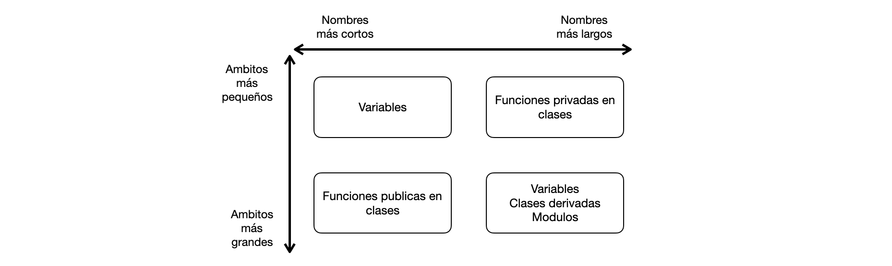

Asignación de nombres
Última modificación: Mayo 14, 2022 | YouTube
Nombres de funciones
Los nombres de las funciones deben revelar una intención.
Deben ser nombres abreviados, pero deben entenderse claramente.
Un nombre debe revelar tres conceptos clave:
Por qué existe?
Qué hace?
Cómo debe ser usada?
[ ]:
# ---< Mal >-------------------------------------------------------------------
df = pd.read_csv("data.csv")
# ---< Bien >------------------------------------------------------------------
request_types = pd.read.csv("data.csv")
[ ]:
# ---< Mal >-------------------------------------------------------------------
#
# * Qué datos contiene el dataframe?
# * Qué es la 6a columna?
# * Por qué es usada la 6a columna?
# * Por qué se sobre escribe el dataframe?
#
def get_data(path):
df = pd.read_csv(path)
df = df.groupby(df.columns[6]).sum()[df.columns[-1]]
return df
res = get_data("house_prices.csv")
# ---< Bien >------------------------------------------------------------------
def get_house_prices_by_age(filepath=None):
house_prices_dataframe = pd.read_csv(filepath)
house_prices_sum_by_age = house_prices_dataframe.groupby("AGE").sum()
house_median_value_sum_by_age = house_prices_sum_by_age["MEDV"]
return house_median_value_sum_by_age
house_median_value_sum_by_age = get_house_prices_by_age(filepath="house_prices.csv")
house_median_value_sum_by_age.shape
Malas etiquetas
[ ]:
#
# No deben ser nombres excesivamente largos.
# No deben ser nombres parecidos con otros ya usados en el código
#
evaluated_data_with_map_global_metrics = None
evaluated_data_with_mrr_global_metrics = None
#
# Las diferencias entre nombres deben estar lo más cerca posible
# del inicio de la palabra
#
map_evaluated_data_metrics = None
mrr_evaluated_data_metrics = None
#
# Se deben usar fuentes que permitan diferenciar correctamente
# los caracteres
#
ml_pipeline = None
m1_pipeline = None
features_01
features_O1
Nombres ruidosos
[ ]:
# ---< Mal >-------------------------------------------------------------------
def lower_case_column_names(columns1):
columns2 = [str.lower(column) for column in columns1]
return columns2
lower_case_column_names(["AA", "BB", "CC"])
# ---< Bien >------------------------------------------------------------------
def lower_case_column_names(input_columns):
output_columns = [str.lower(column) for column in input_columns]
return output_columns
lower_case_column_names(["AA", "BB", "CC"])
No use
tableen las BD ni en las variables que se refieran a tablas..
customers_tablevscustomers.No use
dataframeen las variables que se refieren a dataframes:.
invoice_dataframevsinvoices.No use prefijos como a, the, an en los nombres:
.
aModelvsModelNo use
objecten variables:.
feature_objectvsfeature
[ ]:
# ---< Ok >--------------------------------------------------------------------
def transform_features(raw_features_dataframe):
pass
# ---< Mejor >-----------------------------------------------------------------
def transform_features(raw_features: DataFrame):
pass
[ ]:
#
# Cuál es la diferencia entre las siguientes funciones:
#
def get_model_info():
pass
def get_model_details():
pass
def get_model_information():
pass
Verbalice los nombres
[ ]:
# ---< Mal >-------------------------------------------------------------------
class FTran6:
def __init__(self, i_fs, fs_s, t_strt):
self.i_fs = i_fs
self.fs_s = fs_s
self.t_strt = t_strt
# ---< Bien >------------------------------------------------------------------
class FeatureTransformer:
def __init__(
self,
input_features,
features_schema,
transformer_strategy,
):
self.input_features = input_features
self.features_schema = features_schema
self.transformer_strategy = transformer_strategy
Números mágicos
[ ]:
# ---< Mal >-------------------------------------------------------------------
generate_embeddings(input_features, 30)
for i in range(30):
pass
query = "SELECT .... GROUP BY 1, 5 ORDER BY 7"
# ---< Bien >------------------------------------------------------------------
embedding_max_size = 30
generate_embeddings(input_features, embedding_max_size)
num_days_in_year = 365
for i in range(num_weeks_in_year):
pass
query = "SELECT .... GROUP BY age, income ORDER BY prediction_accuracy"
Evite nombres no significativos
[ ]:
# ---< Mal >-------------------------------------------------------------------
f_list=('city','county','loan_amount')
# 20 líneas de código después:
for d in f_list:
k = transform(f)
store(k)
# ---< Bien >------------------------------------------------------------------
feature_names=('city','county','loan_amount')
# 20 líneas de código después
for feature in feature_names:
transformed_feature_name = transform(feature)
store(transformed_feature_name)
Part-of-Speech Tagging (POS tagging)
Clases: use sustantivos que representen objetos.
DataLoader
DataValidator
FeatureTransformer
ModelBuilder
ModelValidator
ModelPusher
Enumeraciones: son adjetivos.
CATEGORICAL
ORDINAL
NUMERICAL
RED
SUCCESS
Funciones: use verbos que representan acciones.
get_features
train_model
fit
predict
publish_metrics
save_to_db
Funciones booleanas: se representan con
ispara indicar pregunta.
is_trainable
is_validated
is_completed
evaluation_is_ready
metrics_are_published
Tablas SQL: use sustantivos en plural para indicar las entidades que están almacendas en un registro.
accounts
currencies
requests
users
loans
adjusted_quartery_returns
trained_models
artifacts
Consistencia en los nombres
[ ]:
# ---< Mal >-------------------------------------------------------------------
model.train()
mode.optimize()
model.fit()
data.fetch()
data.retrieve()
data.get()
# ---< Bien >------------------------------------------------------------------
model.fit()
model.get()
Use nombres técnicos
[ ]:
#
# Use nombres comunes en ML y estadística que nombres especificos
# del dominio
#
model.entrenar()
model.optimizar_el_modelo()
model.train()
Aplique agrupamiento a los nombres
[ ]:
# ---< Mal >-------------------------------------------------------------------
class DataGenerator:
data_generator_name: str
data_generator_source: str
data_generator_format: str
data_generator=DataGenerator()
data_generator.data_generator_name
data_generator.data_generator_source
data_generator.data_generator_format
# ---< Bien >------------------------------------------------------------------
class DataGenerator:
name: str
source: str
format: str
data_gen=DataGenerator()
data_gen.name
data_gen.source
data_gen.format
Longitud de los nombres de acuerdo al ámbito

Variables
La facilidad de lectura depende de la longitud del código. Mientras más pequeño el ámbito, más corto el nombre.
[ ]:
#
# Función facil de leer
#
def mat_mul(X, Y):
for i in range(len(X)):
for j in range(len(Y[0])):
for k in range(len(Y)):
result[i][j] += X[i][k] * Y[k][j]
return result
[ ]:
#
# Función dificil de leer
#
def mat_mul_with_many_other_responsibilities():
for i in range(len(X)):
for j in range(len(Y[0])):
for k in range(len(Y)):
result[i][j] += X[i][k] * Y[k][j]
# Más codigo
# ...
# Más codigo
# ...
# Más codigo
# ...
return result
Funciones
Se tiende a aplicar reglas contrarias a las reglas usadas para los nombres de las variables. Mientras más es usada una función tiende a tener un nombre más corto. Y para funciones de ámbito muy pequeño se usan nombres largos que las auto-documenten.
Clases
Las clases públicas que se usan a lo largo de todo el código tienen nombres cortos significativos.
Las clases privadas suelen tener nomnbres más largos y expresivos
.
|___ sklearn.ensemble.forest.RandomForestClassifier
|
|___ sklearn.ensemble.forest.ForestClassifier
|
|___ sklearn.base.ClassifierMixin
|
|___ sklearn.ensemble.forest.BaseForest
|
|___ sklearn.base.MultiOutputMixin
|
|___ sklearn.ensemble.base.BaseEnsemble
|___ typing.Sized
|___ typying.Iterable
|___ sklearn.base.BaseEstimator
|___ typing.Iterator
|___ sklearn.base.MetaEstimatorMixin
Módulos
Agrupan clases y funciones y tienen ámbitos muy grandes.
Solo se usan con
import.Tienen nombres largos balanceados con los alias.
import matplotlib.pyplot as plt
import tensorflow as tf
```python import quarterly_budget_calculator as qbc
def main(): pbc.get_quarterly_ebitda()
from numerical_feature_extraction import NumericalFeatureHasher
def transform_numerical_feature(input_feature):
nfh = NumericalFeatureHasher()
result = nfh.transform_feature(input_feature)
return result
[ ]:
# ---< Mal >-------------------------------------------------------------------
# ---< Bien >------------------------------------------------------------------
[ ]:
# ---< Mal >-------------------------------------------------------------------
# ---< Bien >------------------------------------------------------------------
[ ]:
# ---< Mal >-------------------------------------------------------------------
# ---< Bien >------------------------------------------------------------------